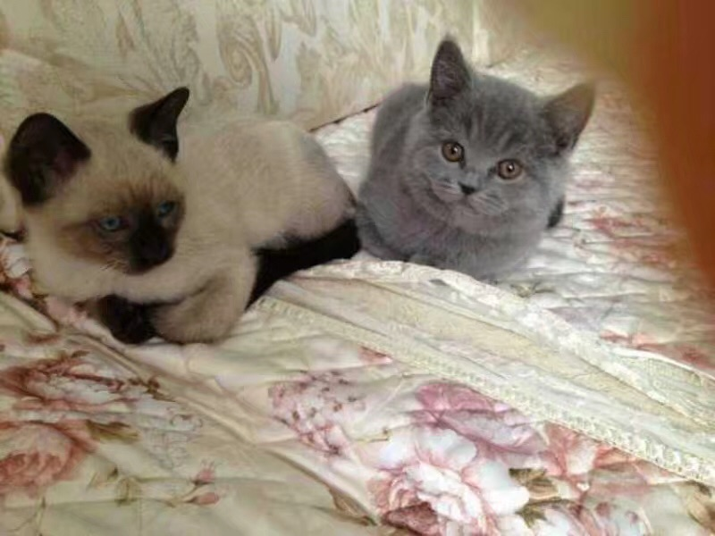
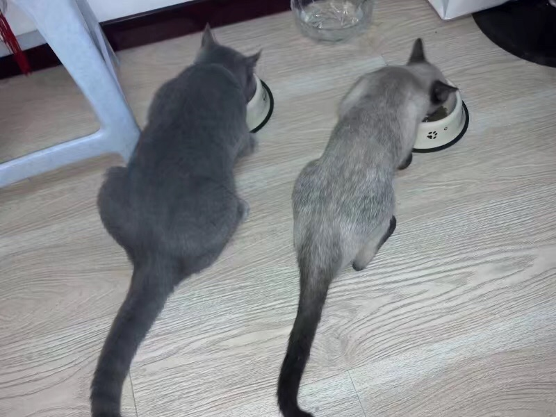
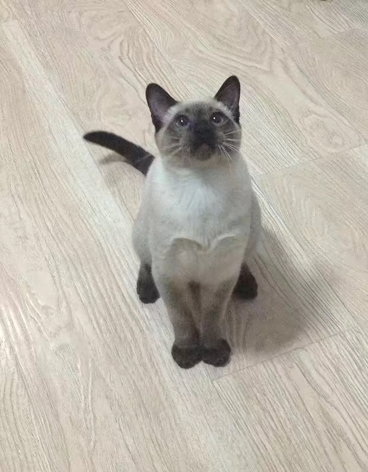
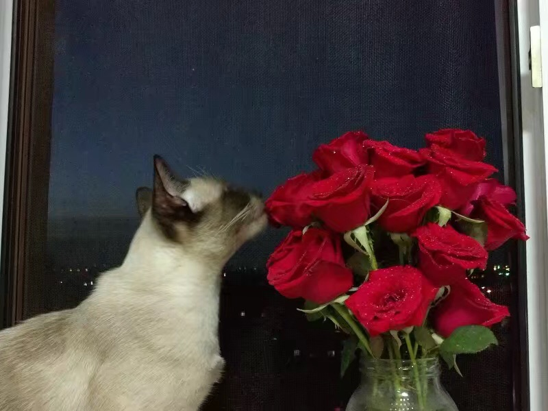
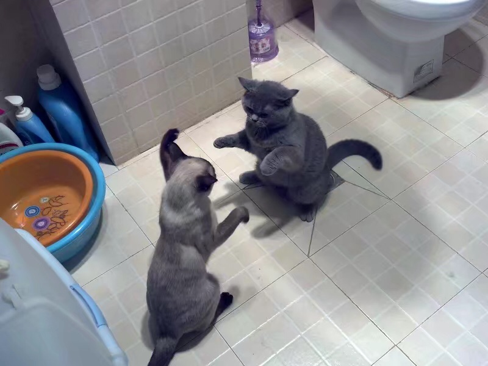
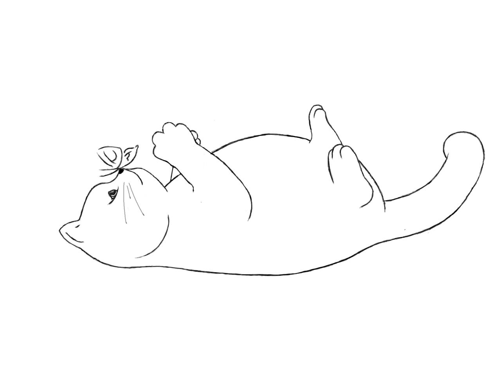
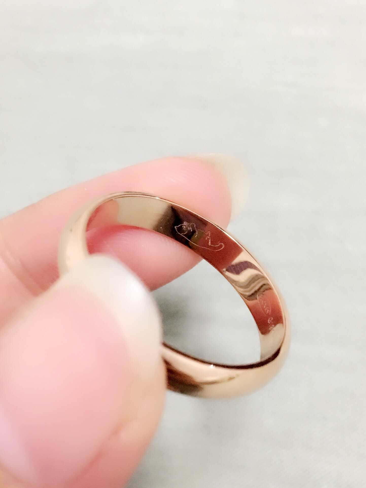
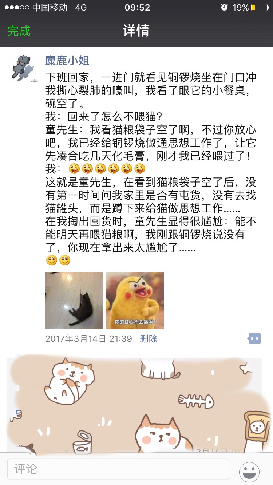

正文:
家有四岁半英短一只，公猫。
大概四年前，和老公（当时还是热恋期的男朋友）决定养一只宠物。
当时在猫和狗之间纠结，男朋友迁就我，决定养猫，在英短和美短之间纠结，我迁就他……
好吧其实还没有彻底决定下来品种的时候，我的一位高中同学联系我，问我能不能养猫，他那里有猫养不了，知道我喜欢小动物，希望我能领养。
然后他给我看了照片，一只萌英短和一只萌暹罗，都是不到四个月的小男生。
他说希望能够一起领养，因为两只猫从小一起长大，猫主人不希望它们分开。
对，他不是猫主人，猫是他同事的，买来时大概两个月，那个同事就出差了，猫在我同学那寄养了一个多月，疫苗驱虫都做过了。主人回来后表示不想要了，工作忙没办法养，所以拜托朋友们帮忙找领养。
送一又赠一，真是喜从天降，于是我们约好了周末去接猫。
至今都记得去接它们时的样子，小小的两只挤在最小号猫包里，同学左手拎猫右手拎着猫厕所和碗等用品，真的是一幅被扫地出门的样子。
我们带着它，它弟弟和它们的全部家当，回家。
刚到家，英短就怂的钻到了枕头下面……而小暹罗则是雄赳赳气昂昂地巡视了它的新领地。
去接它们前做了些准备工作，买了猫砂猫粮零食等，但是换了口味它们并不买账，期间给它们煮了鸡胸肉、牛肉、鱼、虾，小暹罗都吃的很欢，小英短则是饿急了才吃几口，吃相很腼腆，像个初到夫家害羞的小娘子。
后来给它们改了名字，英短叫铜锣烧，暹罗叫童小布，都随男朋友姓。
这是我第一次见到它们的样子（照片）：

到我家以后：



以及这张让无数人笑喷的照片：

本来，我们是想养英短的，私心里当然更偏爱铜锣烧一些，它性格又比较怂，无论吃、玩，什么都抢不过小布，看起来楚楚可怜。
但是慢慢的，我们发现小布的性格特别好，聪明，亲人，活泼，勇敢，不挑食，带出门散步也很威武，这小挖煤的简直是完美的家庭伴侣。如果它现在还在我们身边，铜锣烧不如它十分之一讨喜。失去它曾让我在无数个日夜崩溃痛哭，至今难释怀，保存了无数照片，却不敢多看。
反观铜锣烧，相比之下虽然我两个都爱，但是难免更喜爱小布一些。养了它们之后，我才理解为什么父母会对孩子有偏有向，真的很难控制。
后来的这几年，铜锣烧一直在我们身边，从北到南，再从南到北，最后终于安定下来，我和男朋友买了房，结了婚，即使在最穷困的时候，它的伙食一直不曾下降。很多次我和男朋友半夜饿了在家里翻箱倒柜，最后翻出来的食物只有它的猫粮、罐头、肉条、化毛膏、海藻粉、营养片……
我和老公的婚戒是定制的，里面刻着铜锣烧：


逝者已逝，仍活着的我们，要好好的。
养猫期间也被两家人反对过，以结婚要生孩子不能养宠物为理由干涉多次，后来我们决定，不要孩子，做丁克（不单单因为宠物，本身我们都不是能够放弃享乐养育孩子的那种人，对于孩子来说，这是一种不负责任）。
将铜锣烧刻在婚戒上，也表示了我们的态度。
至于为什么只有铜锣烧，是老公不想我“睹物思人”，也希望我们一家三口能够向前走，而不是一直回头。
—————————·—————————
补充一个老公和铜锣烧的日常：
